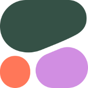
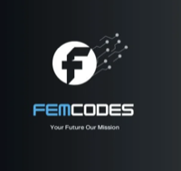
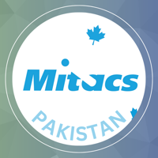

I study how language models think, speak, and act across reasoning, languages, and tools.
السلام علیکم! I'm a Computer Science master's student at the University of British Columbia, advised by Prof. Laks V.S. Lakshmanan. My research asks why large language models behave the way they do, and how to improve that behavior.
My thesis looks at how an LLM agent should balance three things: what the user is asking for (and what it still needs to ask them), what the model already knows in its parameters, and what it can do through tools. The question is when a model should think, when it should act, and when it should pause and ask, and how to make that choice efficient, reliable, and safe.
Before UBC, I led NLP research on Alif, an Urdu LLM, and our team won Meta's $100K Llama Impact Accelerator. I also founded FEMCodes, a non-profit for women in STEM, and I write about ML for KDnuggets and Machine Learning Mastery.
News
- 2026Our paper "Empathy Is Not the Scapegoat for Declines in Factuality and Reliability" was accepted to the AACL 2026 Main Conference!
- Sep 2026Joined Huawei Canada as an AI Research Engineer (Agentic Systems)!
- 2025Started my MSc in Computer Science at UBC in Prof. Laks V.S. Lakshmanan's group.
- 2025Alif, our Urdu LLM, was accepted at MRL @ EMNLP 2025. It improves the Urdu MMLU score by 14.4%.
- 2025Paper on cultural and domain knowledge in multilingual LLMs accepted at AACL 2025.
- 2025Paper on hate speech detection in Devanagari-script languages accepted at CHIPSAL @ COLING 2025.
- 2024Gave a guest lecture at Stanford University on continual pre-training of LLMs.
- 2024Our team won the Meta Llama Impact Accelerator ($100K) for building culturally relevant LLMs. We represented Pakistan among 13 APAC countries.
- 2024Joined the Cohere Labs Aya Expedition as a research contributor.
- 2024Paper on LLM-based NLI for legal decision support accepted at NLLP @ EMNLP 2024.
Publications
I'm also a co-author of two books, Mastering Digital Art with Stable Diffusion and Maximizing Productivity with ChatGPT. The full list of my work is on Google Scholar.
Experience

Teaching
- Teaching Assistant, CPSC 330: Applied Machine Learning, University of British Columbia
- Teaching Assistant, CPSC 455: Applied Industry Practices, University of British Columbia
Honors & Awards
- Winner, Meta Llama Impact Accelerator ($100K award). We represented Pakistan among 13 APAC countries. 2024
- Second runner-up, National AI Innovative Ideas Competition, for the Urdu LLM project 2024
- Teradata Diversity in Tech Scholar, one of six scholars selected worldwide 2023
- Mitacs Globalink Research Scholar, Toronto Metropolitan University 2023
- Harvard WECode Scholar 2023
- Google Generation Scholar, one of 55 recipients from 14,000+ applicants in APAC 2022
- NUST High Achievers Award (Gold Medal) and Dean's List
Service & Community


Writing
I write technical articles for KDnuggets (as Technical Editor), Machine Learning Mastery, and Statology.